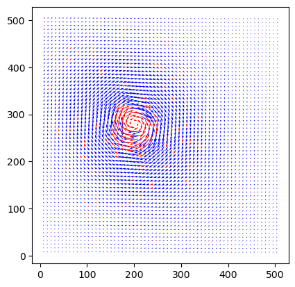

# Import necessary modules
from openpiv import windef
import pathlib
image_path = pathlib.Path(r'./images/')
file_list = []
for path in sorted(image_path.rglob('*.tif')):
print(f'{path.name}')
file_list.append(path.name)
# Create settings object
settings = windef.PIVSettings()
# Data related settings
settings.filepath_images = image_path #'./images/' # Folder with the images to process
settings.save_path = './results/' # Folder for the outputs
# Root name of the output Folder (if any) for Result Files
settings.save_folder_suffix = 'test'
# Format and Image Sequence (see below for more options)
#settings.frame_pattern_a = 'exp1_001_b.bmp'
#settings.frame_pattern_b = 'exp1_001_c.bmp'
# or if you have a sequence:
settings.frame_pattern_a = '*.tif'
# settings.frame_pattern_b = '(1+2),(2+3)'
# settings.frame_pattern_b = '(1+3),(2+4)'
settings.frame_pattern_b = '(1+2),(3+4)'
# Format and Image Sequence
#settings.frame_pattern_a = '*.bmp' # file_list[0]
# settings.frame_pattern_b = file_list[1]
#settings.frame_pattern_b = None
# If you want only one pair
#settings.frame_pattern_a = file_list[0]
#settings.frame_pattern_b = file_list[1]
# Region of interest: (xmin,xmax,ymin,ymax) or 'full' for full image
settings.roi = 'full'
# Configure settings for advanced analysis
settings.windowsizes = (64, 32, 16) # it should be a power of 2
settings.overlap = (32, 16, 8) # This is 50% overlap. In general window size/2 is a good choice.
settings.num_iterations = 3 # select the number of PIV passes
settings.correlation_method = 'circular' # 'circular' or 'linear'
settings.normalized_correlation = False
settings.subpixel_method = 'gaussian' # 'gaussian','centroid','parabolic'
settings.deformation_method = 'symmetric'
settings.interpolation_order = 3 # order of the image interpolation for the window deformation
# Signal to noise ratio options (only for the last pass)
# It is possible to decide if the S/N should be computed (for the last pass) or not
# If extract_sig2noise==False the values in the signal to noise ratio
# output column are set to NaN
settings.extract_sig2noise = True # 'True' or 'False' (only for the last pass)
settings.sig2noise_method = 'peak2peak' # 'peak2peak' or 'peak2mean'
# select the width of the masked to masked out pixels next to the main peak
settings.sig2noise_mask = 2
# Set vector validation parameters
settings.validation_first_pass = True # choose if you want to do validation of the first pass
# The validation is done at each iteration based on three filters.
# The first filter is based on the min/max ranges. Observe that these values are defined in
# terms of minimum and maximum displacement in pixel/frames.
settings.min_max_u_disp = (-30, 30)
settings.min_max_v_disp = (-30, 30)
# The second filter is based on the global STD threshold
settings.std_threshold = 7 # threshold of the std validation
# The third filter is the median test (not normalized at the moment)
settings.median_threshold = 3 # threshold of the median validation
# Validation based on the signal to noise ratio'
# Note: only available when extract_sig2noise==True and only for the last
# pass of the interrogation
# Options: True or False
settings.sig2noise_threshold = 1.2 # minmum signal to noise ratio that is need for a valid vector
# Outlier replacement or Smoothing options
# Replacment options for vectors which are masked as invalid by the validation
settings.replace_vectors = True # True or False
settings.smoothn = True #Enables smoothing of the displacement field
settings.smoothn_p = 0.5 # This is a smoothing parameter
# select a method to replace the outliers: 'localmean', 'disk', 'distance'
settings.filter_method = 'localmean'
# maximum iterations performed to replace the outliers
settings.max_filter_iteration = 4
settings.filter_kernel_size = 2 # kernel size for the localmean method
settings.scaling_factor = 1 # scaling factor pixel/meter
settings.dt = 1 # time between to frames (in seconds)
# Output options
# Select if you want to save the plotted vector field: True or False
settings.save_plot = False
# Choose wether you want to see the vectorfield or not :True or False
settings.show_plot = True
settings.scale_plot = 200 # select a value to scale the quiver plot of the vectorfield
# Run PIV analysis with the given settings
windef.piv(settings)B005_1.tif
B005_2.tif
B005_3.tif
B005_4.tif
Saving to results/OpenPIV_results_16_test/field_A0000.txt
Image Pair 1
B005_1 B005_2
Saving to results/OpenPIV_results_16_test/field_A0001.txt
Image Pair 2
B005_3 B005_4